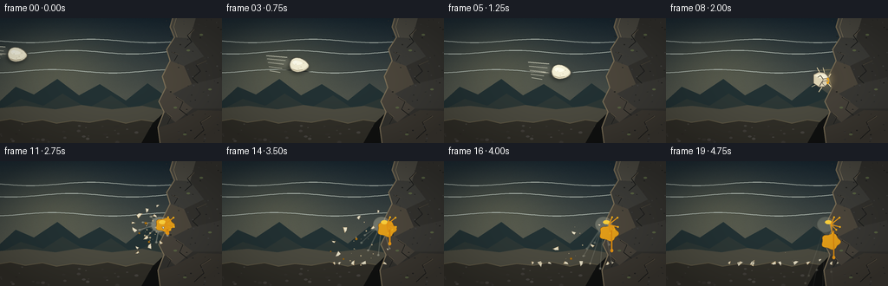
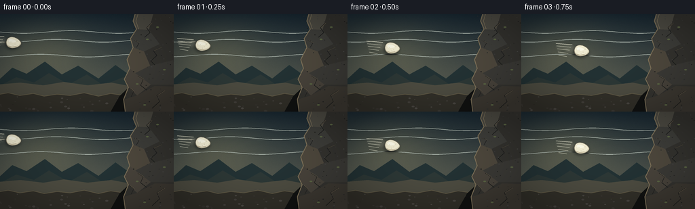

CODING AGENTS AS PIXEL WORLD MODELS
traex/GPT-5.6-Sol · phygen_131
点击播放 · 原生 RGB 像素
逐轮保存的候选
回放视频、检查图与代码变化。
每份候选均可单独播放。实际图片检查记录在下方工具轨迹中。
候选 01播放与检查图
点击播放 · 原生 RGB 像素


展开代码变化
--- 上一保存版本
+++ 本次保存版本
@@ -0,0 +1,296 @@
+from pathlib import Path
+import math
+import numpy as np
+from PIL import Image, ImageDraw, ImageFilter
+import artifact_io
+
+# Deterministic, text-only procedural animation.
+W, H, N, FPS = 256, 144, 20, 4.0
+S = 4
+WS, HS = W*S, H*S
+rng = np.random.default_rng(131)
+
+
+def sc(v): return int(round(v*S))
+def points(seq): return [(sc(x), sc(y)) for x, y in seq]
+def ellipse(draw, box, fill, outline=None, width=1):
+ draw.ellipse(tuple(sc(v) for v in box), fill=fill, outline=outline, width=max(1, sc(width)))
+def polygon(draw, seq, fill, outline=None, width=1):
+ draw.polygon(points(seq), fill=fill)
+ if outline:
+ draw.line(points(list(seq)+[seq[0]]), fill=outline, width=max(1, sc(width)), joint='curve')
+def line(draw, seq, fill, width=1):
+ draw.line(points(seq), fill=fill, width=max(1, sc(width)), joint='curve')
+
+# Static background at supersampled resolution: twilight, distant slopes, gravel.
+y = np.linspace(0, 1, HS)[:, None, None]
+top = np.array([24, 39, 49], dtype=float)
+bot = np.array([103, 103, 87], dtype=float)
+base = top*(1-y) + bot*y
+base = np.repeat(base, WS, axis=1)
+xx, yy = np.meshgrid(np.arange(WS), np.arange(HS))
+# Soft low sun / atmospheric glow behind the flight path.
+glow = np.exp(-(((xx/S-63)/72)**2 + ((yy/S-54)/47)**2))[:, :, None]
+base += glow*np.array([29, 24, 12])[None,None,:]
+noise = rng.normal(0, 1.45, (HS, WS, 1))
+base = np.clip(base + noise, 0, 255).astype(np.uint8)
+BACKGROUND = Image.fromarray(base, 'RGB').convert('RGBA')
+
+def draw_static_scene(im):
+ d = ImageDraw.Draw(im, 'RGBA')
+ # Thin cloud bands.
+ for i, (cy, alpha) in enumerate([(26,16),(39,13),(61,10)]):
+ path=[]
+ for x in range(-10, 210, 5):
+ path.append((x, cy + 2.0*math.sin(x*.045+i)))
+ line(d, path, (177,187,178,alpha), 1.1)
+ # Distant ridges and haze.
+ polygon(d, [(-5,100),(18,79),(39,88),(66,70),(91,89),(115,76),(145,95),(170,75),(205,100),(260,100),(260,145),(-5,145)], (35,50,52,255))
+ polygon(d, [(-5,108),(24,93),(50,101),(72,87),(101,104),(128,89),(152,105),(184,92),(218,111),(260,103),(260,145),(-5,145)], (45,56,54,255))
+ # Mist line separates subject cleanly.
+ polygon(d, [(-5,104),(30,101),(64,105),(94,100),(129,105),(164,101),(196,107),(260,102),(260,145),(-5,145)], (77,76,65,210))
+ # Ground and its uneven edge.
+ ground=[(-5,119),(12,116),(29,120),(49,117),(65,121),(84,118),(103,120),(124,116),(145,121),(163,117),(183,120),(205,115),(224,120),(260,116),(260,145),(-5,145)]
+ polygon(d, ground, (50,48,41,255))
+ line(d, ground[:14], (102,94,72,210), 1)
+ # Ground stones, deterministic.
+ rr=np.random.default_rng(222)
+ for _ in range(58):
+ x0=float(rr.uniform(0,256)); y0=float(rr.uniform(121,143)); r=float(rr.uniform(.35,1.45))
+ c=int(rr.integers(47,79))
+ ellipse(d,(x0-r*1.7,y0-r,x0+r*1.7,y0+r),(c,c-3,c-8,180))
+
+# Rock geometry has a hard, irregular left collision edge.
+ROCK_EDGE=[(200,-4),(196,10),(201,22),(192,36),(196,49),(187,67),(191,80),(183,96),(189,108),(182,126),(185,148)]
+
+def draw_rock(im):
+ d=ImageDraw.Draw(im,'RGBA')
+ # Grounded cast shadow emphasizes mass.
+ polygon(d, [(176,121),(193,105),(256,108),(256,144),(163,144)], (17,18,17,115))
+ polygon(d, ROCK_EDGE+[(262,148),(262,-4)], (52,51,47,255))
+ # Faceted planes.
+ polygon(d, [(200,-2),(226,-2),(219,23),(201,22),(196,10)], (77,75,67,255))
+ polygon(d, [(201,22),(219,23),(235,44),(212,55),(196,49),(192,36)], (62,62,58,255))
+ polygon(d, [(196,49),(212,55),(221,76),(199,87),(191,80),(187,67)], (78,72,61,255))
+ polygon(d, [(221,76),(255,68),(260,104),(222,104),(199,87)], (59,58,54,255))
+ polygon(d, [(191,80),(199,87),(222,104),(202,120),(189,108),(183,96)], (72,67,59,255))
+ polygon(d, [(202,120),(228,106),(260,107),(260,147),(185,147),(182,126)], (61,57,50,255))
+ # Light catches only the exposed edge; the object itself never moves.
+ line(d, ROCK_EDGE, (124,112,88,255), 1.35)
+ line(d, [(203,0),(200,10),(204,22)], (151,137,105,90), .55)
+ # Angular cracks.
+ cracks=[[(223,13),(216,20),(221,27),(213,34)],
+ [(237,49),(226,54),(231,61),(222,69),(228,75)],
+ [(203,91),(211,96),(207,105),(216,112)],
+ [(242,113),(231,120),(235,129),(224,139)],
+ [(198,39),(205,42),(201,49)],
+ [(191,109),(197,114),(193,122)]]
+ for c in cracks:
+ line(d,c,(28,29,28,155),.8)
+ # tiny warm lip on one side
+ if len(c)>2: line(d,[(c[0][0]+.7,c[0][1]),(c[1][0]+.7,c[1][1])],(111,99,78,55),.4)
+ # Pits, grain, and lichen.
+ rr=np.random.default_rng(31)
+ for _ in range(90):
+ x0=float(rr.uniform(190,258)); y0=float(rr.uniform(1,143))
+ # only place if safely right of approximate edge
+ if x0 < 188 + .08*y0: continue
+ r=float(rr.uniform(.25,1.05)); shade=int(rr.integers(28,72))
+ ellipse(d,(x0-r,y0-r*.65,x0+r,y0+r*.65),(shade,shade,shade-2,int(rr.integers(55,145))))
+ for x0,y0 in [(217,37),(242,82),(213,134),(232,19),(202,103)]:
+ ellipse(d,(x0-2,y0-1.1,x0+2,y0+1.1),(91,102,69,65))
+
+# Egg outline sampled as a smooth asymmetric oval with a tapered leading (right) end.
+def egg_poly(cx,cy,rx=11,ry=8,angle=0):
+ out=[]; ca=math.cos(angle); sa=math.sin(angle)
+ for a in np.linspace(0,2*math.pi,72,endpoint=False):
+ x=rx*math.cos(a)
+ yy=ry*math.sin(a)*(1-.22*math.cos(a))
+ # tiny flattening at the round rear gives a natural shell profile
+ xr=x*ca-yy*sa; yr=x*sa+yy*ca
+ out.append((cx+xr,cy+yr))
+ return out
+
+def draw_speed_egg(im,cx,cy,frame):
+ # Directional wake/ghosting, visible only behind a very fast moving intact egg.
+ wake=Image.new('RGBA',(WS,HS),(0,0,0,0)); wd=ImageDraw.Draw(wake,'RGBA')
+ for lag,alpha,scale in [(30,20,0.83),(17,34,.92)]:
+ p=egg_poly(cx-lag,cy-lag*.18,10.5*scale,7.7*scale,.11)
+ polygon(wd,p,(224,218,191,alpha))
+ wake=wake.filter(ImageFilter.GaussianBlur(sc(2.3)))
+ im.alpha_composite(wake)
+ d=ImageDraw.Draw(im,'RGBA')
+ # Speed streaks differ subtly each frame but maintain direction.
+ for j in range(5):
+ sy=cy-9+j*4.3 + math.sin(frame+j)*.6
+ x2=cx-14-j*2
+ x1=x2-(24-j*3)
+ line(d,[(x1,sy-2.0),(x2,sy)],(214,214,193,72-j*8),.65 if j else 1.0)
+ # Soft underside shadow/blur.
+ sh=Image.new('RGBA',(WS,HS),(0,0,0,0)); sd=ImageDraw.Draw(sh,'RGBA')
+ polygon(sd,egg_poly(cx-1,cy+2,11.4,8.2,.11),(7,12,13,110))
+ sh=sh.filter(ImageFilter.GaussianBlur(sc(2.0))); im.alpha_composite(sh)
+ # Shell base plus outline.
+ ep=egg_poly(cx,cy,11,8,.11)
+ polygon(d,ep,(225,219,191,255),(111,105,89,220),.65)
+ # Shell shading clipped approximately by nested silhouettes.
+ polygon(d,egg_poly(cx-.4,cy-1.0,9.8,6.7,.11),(244,239,213,255))
+ polygon(d,egg_poly(cx-2.2,cy-2.6,5.5,2.4,.11),(255,253,234,165))
+ # Warm lower reflected light and tiny pores.
+ line(d,[(cx-8,cy+4.8),(cx-3,cy+6.3),(cx+4,cy+5.3)],(182,170,140,115),1.0)
+ for ox,oy in [(-4,-1),(2,2),(-1,4),(5,-2)]:
+ ellipse(d,(cx+ox-.18,cy+oy-.18,cx+ox+.18,cy+oy+.18),(150,142,119,100))
+ # Pinpoint highlight tracks upper-left lighting.
+ ellipse(d,(cx-5.9,cy-4.9,cx-3.2,cy-2.8),(255,255,242,210))
+
+
+def draw_impact(im, phase):
+ """phase 0 is the instant of maximum compression."""
+ d=ImageDraw.Draw(im,'RGBA')
+ if phase==0:
+ # Contact dust/flash first, then the visibly flattened shell.
+ flash=Image.new('RGBA',(WS,HS),(0,0,0,0)); fd=ImageDraw.Draw(flash,'RGBA')
+ ellipse(fd,(176,58,195,83),(255,224,143,75))
+ flash=flash.filter(ImageFilter.GaussianBlur(sc(5))); im.alpha_composite(flash)
+ d=ImageDraw.Draw(im,'RGBA')
+ # Radial impact ticks terminate at the unmoving stone face.
+ rays=[((181,69),(174,57)),((180,73),(168,79)),((184,67),(181,57)),((182,76),(176,85)),((186,70),(190,64)),((186,74),(190,79))]
+ for a,b in rays: line(d,[a,b],(244,226,180,185),.8)
+ shell=[(170,65),(176,62),(183,63),(187,67),(187,75),(183,79),(176,79),(170,75)]
+ polygon(d,shell,(226,216,184,255),(99,91,76,230),.7)
+ polygon(d,[(171,66),(178,64),(184,65),(186,69),(184,70),(177,69)],(251,245,220,235))
+ # Fracture network, all converging toward contact.
+ line(d,[(186,69),(181,70),(178,66),(175,68)],(91,84,72,245),.75)
+ line(d,[(185,72),(180,73),(177,78)],(91,84,72,245),.75)
+ line(d,[(181,70),(180,75),(183,78)],(91,84,72,245),.6)
+ ellipse(d,(185.1,68.4,188.1,76.1),(239,168,32,220))
+ return
+
+ k=phase # phase 1 begins one frame after contact
+ # Albumen splash, pale and translucent, thrown back left and against wall.
+ album=Image.new('RGBA',(WS,HS),(0,0,0,0)); ad=ImageDraw.Draw(album,'RGBA')
+ spread=min(k,3)
+ tendrils=[(-8,-12),(-15,-6),(-18,2),(-12,10),(-3,15),(5,-10),(7,8)]
+ for i,(vx,vy) in enumerate(tendrils):
+ ex=184+vx*min(k,2)*.65
+ ey=72+vy*min(k,2)*.55+0.55*k*k
+ line(ad,[(184,72),(ex,ey)],(229,229,207,max(20,125-k*8)),max(.45,2.1-.12*k))
+ ellipse(ad,(ex-1.6,ey-1.2,ex+1.6,ey+1.2),(238,237,212,max(25,150-k*9)))
+ ellipse(ad,(177-spread,65-spread*.4,191+spread,80+spread*.7),(225,224,198,max(22,115-k*6)))
+ album=album.filter(ImageFilter.GaussianBlur(sc(.45)))
+ im.alpha_composite(album)
+ d=ImageDraw.Draw(im,'RGBA')
+
+ # Yolk splats on the wall, spreading at first, then sagging and dripping.
+ splat_alpha=max(150,245-k*4)
+ radx=min(10.5,4.5+k*2.1); rady=min(9.0,4.0+k*1.35)
+ blob=[]
+ for i,a in enumerate(np.linspace(0,2*math.pi,30,endpoint=False)):
+ wob=1+.11*math.sin(5*a+1.3)
+ blob.append((190+radx*math.cos(a)*wob,72+rady*math.sin(a)*wob+.17*k*k))
+ polygon(d,blob,(232,161,25,splat_alpha),(129,82,19,170),.45)
+ ellipse(d,(187-radx*.35,68,191,72.5),(255,211,62,185))
+ # Star-like yolk fingers on immovable stone.
+ for ang,length in [(-1.25,9),(-.72,12),(.28,10),(.87,8),(1.5,10)]:
+ l=length*min(1,k/2)
+ x2=191+math.cos(ang)*l; y2=73+math.sin(ang)*l
+ line(d,[(190,73),(x2,y2)],(230,151,22,200),1.3)
+ ellipse(d,(x2-1,y2-1,x2+1,y2+1),(245,176,26,210))
+ if k>=3:
+ drip_len=min(32,(k-2)*4.0)
+ # Viscous narrowing drip and terminal bead.
+ line(d,[(193,77+k*.3),(193.3,79+drip_len)],(219,139,17,220),max(.8,2.5-.08*k))
+ ellipse(d,(191.7,77+drip_len,194.9,81+drip_len),(235,151,20,225))
+ # A few detached yolk droplets fly backward, then fall.
+ droplets=[(-7,-7,1.4),(-11,1,1.0),(-5,8,1.2),(-15,-2,.8)]
+ for vx,vy,r in droplets:
+ px=181+vx*k*.62; py=72+vy*k*.48+1.05*k*k
+ if py<118:
+ ellipse(d,(px-r,py-r,px+r,py+r),(240,170,25,max(90,235-k*7)),(141,91,16,120))
+
+# Shell shards, with ballistic rebound and gravity. Values are (origin dx/dy, vx, vy, size, spin).
+SHARDS=[
+ (-2,-5,-6.2,-5.0,3.8,.72),(0,-4,-3.9,-7.4,3.0,-.85),(2,-2,-1.5,-5.8,2.6,.65),
+ (-4,0,-7.2,-1.1,4.0,-.55),(1,1,-4.5,1.6,3.2,.83),(-1,4,-2.4,4.0,3.8,-.68),
+ (3,3,.5,2.8,2.5,.9),(-5,4,-5.9,4.4,2.4,.58),(-3,-2,-8.2,-3.1,2.1,-.92),
+ (2,-6,-.5,-8.3,2.2,.77),(0,5,-7.5,6.0,2.0,-.52),(4,0,1.0,-2.0,1.7,.9)
+]
+
+def draw_shards(im,k):
+ d=ImageDraw.Draw(im,'RGBA')
+ # shell fragments begin one frame after the compression frame.
+ for idx,(ox,oy,vx,vy,size,spin) in enumerate(SHARDS):
+ px=181+ox+vx*k
+ py=72+oy+vy*k+1.15*k*k
+ # settle on ground instead of passing through it
+ floor=117.8-(idx%3)*.35
+ if py>floor:
+ px += vx*.18*(k-1)
+ py=floor
+ if px<-5 or px>259: continue
+ ang=spin*k+idx*.7
+ ca,sa=math.cos(ang),math.sin(ang)
+ local=[(-size,-size*.45),(size*.8,-size*.28),(size*.3,size*.72),(-size*.55,size*.35)]
+ p=[]
+ for x0,y0 in local:
+ p.append((px+x0*ca-y0*sa,py+x0*sa+y0*ca))
+ polygon(d,p,(232,225,199,245),(101,94,79,210),.45)
+ # warm inner membrane on half the pieces
+ if idx%2==0:
+ a,b,c=p[0],p[1],p[2]
+ line(d,[a,b,c],(191,160,111,125),.55)
+
+
+def draw_contact_dust(im,frame):
+ if frame<8: return
+ k=frame-8
+ d=ImageDraw.Draw(im,'RGBA')
+ rr=np.random.default_rng(800)
+ for i in range(18):
+ ang=rr.uniform(2.1,4.15) # mostly leftward arc
+ speed=rr.uniform(2.0,8.0)
+ px=186+math.cos(ang)*speed*k
+ py=72+math.sin(ang)*speed*k+.85*k*k
+ r=max(.25,rr.uniform(.35,1.1)-k*.045)
+ if 0<px<256 and py<120:
+ ellipse(d,(px-r,py-r,px+r,py+r),(180,164,129,max(0,125-k*9)))
+
+
+def render(frame):
+ im=BACKGROUND.copy()
+ draw_static_scene(im)
+ # Subject and effects behind rock edge or in front where physically appropriate.
+ if frame<=7:
+ # accelerating/slightly descending trajectory
+ xs=[20,43,66,89,112,135,157,176]
+ ys=[42,46,50,54,58,62,67,72]
+ draw_speed_egg(im,xs[frame],ys[frame],frame)
+ draw_rock(im)
+ elif frame==8:
+ # Egg overlaps the rock edge at contact; draw rock first and impact on top.
+ draw_rock(im)
+ draw_impact(im,0)
+ draw_contact_dust(im,frame)
+ else:
+ draw_rock(im)
+ k=frame-8
+ draw_impact(im,k)
+ draw_shards(im,k)
+ draw_contact_dust(im,frame)
+ # A restrained vignette and final downsampling unify the painterly scene.
+ arr=np.asarray(im.convert('RGB')).astype(np.float32)
+ yy2,xx2=np.mgrid[0:HS,0:WS]
+ nx=(xx2-WS/2)/(WS/2); ny=(yy2-HS/2)/(HS/2)
+ vig=np.clip(1-.16*(nx*nx+ny*ny),.76,1.0)[:,:,None]
+ arr=np.clip(arr*vig,0,255).astype(np.uint8)
+ out=Image.fromarray(arr,'RGB').resize((W,H),Image.Resampling.LANCZOS)
+ return np.asarray(out,dtype=np.uint8)
+
+
+def main():
+ frames=np.stack([render(i) for i in range(N)],axis=0)
+ artifact_io.save(frames,Path(__file__).resolve().parent)
+ print('saved',frames.shape,frames.dtype,'range',int(frames.min()),int(frames.max()))
+
+if __name__=='__main__':
+ main()
可观测工具轨迹
实际执行的命令与返回图片。
命令 1exit 0
/bin/bash -lc "cat GENERATION_RULES.md && printf '\\n--- task_spec.json ---\\n' && cat task_spec.json && printf '\\n--- prompt.txt ---\\n' && cat prompt.txt"
命令 2exit 0
/bin/bash -lc "printf '%s\\n' '--- files ---'; find . -maxdepth 3 -type f -printf '%p\\n' | sort; printf '%s\\n' '--- commands ---'; command -v ffmpeg || true; command -v python3 || true; command -v blender || true; command -v convert || true; command -v magick || true; printf '%s\\n' '--- python packages ---'; python3 - <<'PY' mods=['numpy','cv2','PIL','imageio','moviepy','cairo','moderngl','pygame','scipy'] for m in mods: try: x=__import__(m); print(m, 'OK', getattr(x,'__version__','')) except Exception as e: print(m, 'NO',type(e).__name__) PY"
命令 3exit 0
/bin/bash -lc 'cat artifact_io.py'
命令 4exit 0
/bin/bash -lc "cat > generate.py <<'PY'
from pathlib import Path
import math
import numpy as np
from PIL import Image, ImageDraw, ImageFilter
import artifact_io
# Deterministic, text-only procedural animation.
W, H, N, FPS = 256, 144, 20, 4.0
S = 4
WS, HS = W*S, H*S
rng = np.random.default_rng(131)
def sc(v): return int(round(v*S))
def points(seq): return [(sc(x), sc(y)) for x, y in seq]
def ellipse(draw, box, fill, outline=None, width=1):
draw.ellipse(tuple(sc(v) for v in box), fill=fill, outline=outline, width=max(1, sc(width)))
def polygon(draw, seq, fill, outline=None, width=1):
draw.polygon(points(seq), fill=fill)
if outline:
draw.line(points(list(seq)+[seq[0]]), fill=outline, width=max(1, sc(width)), joint='curve')
def line(draw, seq, fill, width=1):
draw.line(points(seq), fill=fill, width=max(1, sc(width)), joint='curve')
# Static background at supersampled resolution: twilight, distant slopes, gravel.
y = np.linspace(0, 1, HS)[:, None, None]
top = np.array([24, 39, 49], dtype=float)
bot = np.array([103, 103, 87], dtype=float)
base = top*(1-y) + bot*y
base = np.repeat(base, WS, axis=1)
xx, yy = np.meshgrid(np.arange(WS), np.arange(HS))
# Soft low sun / atmospheric glow behind the flight path.
glow = np.exp(-(((xx/S-63)/72)**2 + ((yy/S-54)/47)**2))[:, :, None]
base += glow*np.array([29, 24, 12])[None,None,:]
noise = rng.normal(0, 1.45, (HS, WS, 1))
base = np.clip(base + noise, 0, 255).astype(np.uint8)
BACKGROUND = Image.fromarray(base, 'RGB').convert('RGBA')
def draw_static_scene(im):
d = ImageDraw.Draw(im, 'RGBA')
# Thin cloud bands.
for i, (cy, alpha) in enumerate([(26,16),(39,13),(61,10)]):
path=[]
for x in range(-10, 210, 5):
path.append((x, cy + 2.0*math.sin(x*.045+i)))
line(d, path, (177,187,178,alpha), 1.1)
# Distant ridges and haze.
polygon(d, [(-5,100),(18,79),(39,88),(66,70),(91,89),(115,76),(145,95),(170,75),(205,100),(260,100),(260,145),(-5,145)], (35,50,52,255))
polygon(d, [(-5,108),(24,93),(50,101),(72,87),(101,104),(128,89),(152,105),(184,92),(218,111),(260,103),(260,145),(-5,145)], (45,56,54,255))
# Mist line separates subject cleanly.
polygon(d, [(-5,104),(30,101),(64,105),(94,100),(129,105),(164,101),(196,107),(260,102),(260,145),(-5,145)], (77,76,65,210))
# Ground and its uneven edge.
ground=[(-5,119),(12,116),(29,120),(49,117),(65,121),(84,118),(103,120),(124,116),(145,121),(163,117),(183,120),(205,115),(224,120),(260,116),(260,145),(-5,145)]
polygon(d, ground, (50,48,41,255))
line(d, ground[:14], (102,94,72,210), 1)
# Ground stones, deterministic.
rr=np.random.default_rng(222)
for _ in range(58):
x0=float(rr.uniform(0,256)); y0=float(rr.uniform(121,143)); r=float(rr.uniform(.35,1.45))
c=int(rr.integers(47,79))
ellipse(d,(x0-r*1.7,y0-r,x0+r*1.7,y0+r),(c,c-3,c-8,180))
# Rock geometry has a hard, irregular left collision edge.
ROCK_EDGE=[(200,-4),(196,10),(201,22),(192,36),(196,49),(187,67),(191,80),(183,96),(189,108),(182,126),(185,148)]
def draw_rock(im):
d=ImageDraw.Draw(im,'RGBA')
# Grounded cast shadow emphasizes mass.
polygon(d, [(176,121),(193,105),(256,108),(256,144),(163,144)], (17,18,17,115))
polygon(d, ROCK_EDGE+[(262,148),(262,-4)], (52,51,47,255))
# Faceted planes.
polygon(d, [(200,-2),(226,-2),(219,23),(201,22),(196,10)], (77,75,67,255))
polygon(d, [(201,22),(219,23),(235,44),(212,55),(196,49),(192,36)], (62,62,58,255))
polygon(d, [(196,49),(212,55),(221,76),(199,87),(191,80),(187,67)], (78,72,61,255))
polygon(d, [(221,76),(255,68),(260,104),(222,104),(199,87)], (59,58,54,255))
polygon(d, [(191,80),(199,87),(222,104),(202,120),(189,108),(183,96)], (72,67,59,255))
polygon(d, [(202,120),(228,106),(260,107),(260,147),(185,147),(182,126)], (61,57,50,255))
# Light catches only the exposed edge; the object itself never moves.
line(d, ROCK_EDGE, (124,112,88,255), 1.35)
line(d, [(203,0),(200,10),(204,22)], (151,137,105,90), .55)
# Angular cracks.
cracks=[[(223,13),(216,20),(221,27),(213,34)],
[(237,49),(226,54),(231,61),(222,69),(228,75)],
[(203,91),(211,96),(207,105),(216,112)],
[(242,113),(231,120),(235,129),(224,139)],
[(198,39),(205,42),(201,49)],
[(191,109),(197,114),(193,122)]]
for c in cracks:
line(d,c,(28,29,28,155),.8)
# tiny warm lip on one side
if len(c)>2: line(d,[(c[0][0]+.7,c[0][1]),(c[1][0]+.7,c[1][1])],(111,99,78,55),.4)
# Pits, grain, and lichen.
rr=np.random.default_rng(31)
for _ in range(90):
x0=float(rr.uniform(190,258)); y0=float(rr.uniform(1,143))
# only place if safely right of approximate edge
if x0 < 188 + .08*y0: continue
r=float(rr.uniform(.25,1.05)); shade=int(rr.integers(28,72))
ellipse(d,(x0-r,y0-r*.65,x0+r,y0+r*.65),(shade,shade,shade-2,int(rr.integers(55,145))))
for x0,y0 in [(217,37),(242,82),(213,134),(232,19),(202,103)]:
ellipse(d,(x0-2,y0-1.1,x0+2,y0+1.1),(91,102,69,65))
# Egg outline sampled as a smooth asymmetric oval with a tapered leading (right) end.
def egg_poly(cx,cy,rx=11,ry=8,angle=0):
out=[]; ca=math.cos(angle); sa=math.sin(angle)
for a in np.linspace(0,2*math.pi,72,endpoint=False):
x=rx*math.cos(a)
yy=ry*math.sin(a)*(1-.22*math.cos(a))
# tiny flattening at the round rear gives a natural shell profile
xr=x*ca-yy*sa; yr=x*sa+yy*ca
out.append((cx+xr,cy+yr))
return out
def draw_speed_egg(im,cx,cy,frame):
# Directional wake/ghosting, visible only behind a very fast moving intact egg.
wake=Image.new('RGBA',(WS,HS),(0,0,0,0)); wd=ImageDraw.Draw(wake,'RGBA')
for lag,alpha,scale in [(30,20,0.83),(17,34,.92)]:
p=egg_poly(cx-lag,cy-lag*.18,10.5*scale,7.7*scale,.11)
polygon(wd,p,(224,218,191,alpha))
wake=wake.filter(ImageFilter.GaussianBlur(sc(2.3)))
im.alpha_composite(wake)
d=ImageDraw.Draw(im,'RGBA')
# Speed streaks differ subtly each frame but maintain direction.
for j in range(5):
sy=cy-9+j*4.3 + math.sin(frame+j)*.6
x2=cx-14-j*2
x1=x2-(24-j*3)
line(d,[(x1,sy-2.0),(x2,sy)],(214,214,193,72-j*8),.65 if j else 1.0)
# Soft underside shadow/blur.
sh=Image.new('RGBA',(WS,HS),(0,0,0,0)); sd=ImageDraw.Draw(sh,'RGBA')
polygon(sd,egg_poly(cx-1,cy+2,11.4,8.2,.11),(7,12,13,110))
sh=sh.filter(ImageFilter.GaussianBlur(sc(2.0))); im.alpha_composite(sh)
# Shell base plus outline.
ep=egg_poly(cx,cy,11,8,.11)
polygon(d,ep,(225,219,191,255),(111,105,89,220),.65)
# Shell shading clipped approximately by nested silhouettes.
polygon(d,egg_poly(cx-.4,cy-1.0,9.8,6.7,.11),(244,239,213,255))
polygon(d,egg_poly(cx-2.2,cy-2.6,5.5,2.4,.11),(255,253,234,165))
# Warm lower reflected light and tiny pores.
line(d,[(cx-8,cy+4.8),(cx-3,cy+6.3),(cx+4,cy+5.3)],(182,170,140,115),1.0)
for ox,oy in [(-4,-1),(2,2),(-1,4),(5,-2)]:
ellipse(d,(cx+ox-.18,cy+oy-.18,cx+ox+.18,cy+oy+.18),(150,142,119,100))
# Pinpoint highlight tracks upper-left lighting.
ellipse(d,(cx-5.9,cy-4.9,cx-3.2,cy-2.8),(255,255,242,210))
def draw_impact(im, phase):
\"\"\"phase 0 is the instant of maximum compression.\"\"\"
d=ImageDraw.Draw(im,'RGBA')
if phase==0:
# Contact dust/flash first, then the visibly flattened shell.
flash=Image.new('RGBA',(WS,HS),(0,0,0,0)); fd=ImageDraw.Draw(flash,'RGBA')
ellipse(fd,(176,58,195,83),(255,224,143,75))
flash=flash.filter(ImageFilter.GaussianBlur(sc(5))); im.alpha_composite(flash)
d=ImageDraw.Draw(im,'RGBA')
# Radial impact ticks terminate at the unmoving stone face.
rays=[((181,69),(174,57)),((180,73),(168,79)),((184,67),(181,57)),((182,76),(176,85)),((186,70),(190,64)),((186,74),(190,79))]
for a,b in rays: line(d,[a,b],(244,226,180,185),.8)
shell=[(170,65),(176,62),(183,63),(187,67),(187,75),(183,79),(176,79),(170,75)]
polygon(d,shell,(226,216,184,255),(99,91,76,230),.7)
polygon(d,[(171,66),(178,64),(184,65),(186,69),(184,70),(177,69)],(251,245,220,235))
# Fracture network, all converging toward contact.
line(d,[(186,69),(181,70),(178,66),(175,68)],(91,84,72,245),.75)
line(d,[(185,72),(180,73),(177,78)],(91,84,72,245),.75)
line(d,[(181,70),(180,75),(183,78)],(91,84,72,245),.6)
ellipse(d,(185.1,68.4,188.1,76.1),(239,168,32,220))
return
k=phase # phase 1 begins one frame after contact
# Albumen splash, pale and translucent, thrown back left and against wall.
album=Image.new('RGBA',(WS,HS),(0,0,0,0)); ad=ImageDraw.Draw(album,'RGBA')
spread=min(k,3)
tendrils=[(-8,-12),(-15,-6),(-18,2),(-12,10),(-3,15),(5,-10),(7,8)]
for i,(vx,vy) in enumerate(tendrils):
ex=184+vx*min(k,2)*.65
ey=72+vy*min(k,2)*.55+0.55*k*k
line(ad,[(184,72),(ex,ey)],(229,229,207,max(20,125-k*8)),max(.45,2.1-.12*k))
ellipse(ad,(ex-1.6,ey-1.2,ex+1.6,ey+1.2),(238,237,212,max(25,150-k*9)))
ellipse(ad,(177-spread,65-spread*.4,191+spread,80+spread*.7),(225,224,198,max(22,115-k*6)))
album=album.filter(ImageFilter.GaussianBlur(sc(.45)))
im.alpha_composite(album)
d=ImageDraw.Draw(im,'RGBA')
# Yolk splats on the wall, spreading at first, then sagging and dripping.
splat_alpha=max(150,245-k*4)
radx=min(10.5,4.5+k*2.1); rady=min(9.0,4.0+k*1.35)
blob=[]
for i,a in enumerate(np.linspace(0,2*math.pi,30,endpoint=False)):
wob=1+.11*math.sin(5*a+1.3)
blob.append((190+radx*math.cos(a)*wob,72+rady*math.sin(a)*wob+.17*k*k))
polygon(d,blob,(232,161,25,splat_alpha),(129,82,19,170),.45)
ellipse(d,(187-radx*.35,68,191,72.5),(255,211,62,185))
# Star-like yolk fingers on immovable stone.
for ang,length in [(-1.25,9),(-.72,12),(.28,10),(.87,8),(1.5,10)]:
l=length*min(1,k/2)
x2=191+math.cos(ang)*l; y2=73+math.sin(ang)*l
line(d,[(190,73),(x2,y2)],(230,151,22,200),1.3)
ellipse(d,(x2-1,y2-1,x2+1,y2+1),(245,176,26,210))
if k>=3:
drip_len=min(32,(k-2)*4.0)
# Viscous narrowing drip and terminal bead.
line(d,[(193,77+k*.3),(193.3,79+drip_len)],(219,139,17,220),max(.8,2.5-.08*k))
ellipse(d,(191.7,77+drip_len,194.9,81+drip_len),(235,151,20,225))
# A few detached yolk droplets fly backward, then fall.
droplets=[(-7,-7,1.4),(-11,1,1.0),(-5,8,1.2),(-15,-2,.8)]
for vx,vy,r in droplets:
px=181+vx*k*.62; py=72+vy*k*.48+1.05*k*k
if py<118:
ellipse(d,(px-r,py-r,px+r,py+r),(240,170,25,max(90,235-k*7)),(141,91,16,120))
# Shell shards, with ballistic rebound and gravity. Values are (origin dx/dy, vx, vy, size, spin).
SHARDS=[
(-2,-5,-6.2,-5.0,3.8,.72),(0,-4,-3.9,-7.4,3.0,-.85),(2,-2,-1.5,-5.8,2.6,.65),
(-4,0,-7.2,-1.1,4.0,-.55),(1,1,-4.5,1.6,3.2,.83),(-1,4,-2.4,4.0,3.8,-.68),
(3,3,.5,2.8,2.5,.9),(-5,4,-5.9,4.4,2.4,.58),(-3,-2,-8.2,-3.1,2.1,-.92),
(2,-6,-.5,-8.3,2.2,.77),(0,5,-7.5,6.0,2.0,-.52),(4,0,1.0,-2.0,1.7,.9)
]
def draw_shards(im,k):
d=ImageDraw.Draw(im,'RGBA')
# shell fragments begin one frame after the compression frame.
for idx,(ox,oy,vx,vy,size,spin) in enumerate(SHARDS):
px=181+ox+vx*k
py=72+oy+vy*k+1.15*k*k
# settle on ground instead of passing through it
floor=117.8-(idx%3)*.35
if py>floor:
px += vx*.18*(k-1)
py=floor
if px<-5 or px>259: continue
ang=spin*k+idx*.7
ca,sa=math.cos(ang),math.sin(ang)
local=[(-size,-size*.45),(size*.8,-size*.28),(size*.3,size*.72),(-size*.55,size*.35)]
p=[]
for x0,y0 in local:
p.append((px+x0*ca-y0*sa,py+x0*sa+y0*ca))
polygon(d,p,(232,225,199,245),(101,94,79,210),.45)
# warm inner membrane on half the pieces
if idx%2==0:
a,b,c=p[0],p[1],p[2]
line(d,[a,b,c],(191,160,111,125),.55)
def draw_contact_dust(im,frame):
if frame<8: return
k=frame-8
d=ImageDraw.Draw(im,'RGBA')
rr=np.random.default_rng(800)
for i in range(18):
ang=rr.uniform(2.1,4.15) # mostly leftward arc
speed=rr.uniform(2.0,8.0)
px=186+math.cos(ang)*speed*k
py=72+math.sin(ang)*speed*k+.85*k*k
r=max(.25,rr.uniform(.35,1.1)-k*.045)
if 0<px<256 and py<120:
ellipse(d,(px-r,py-r,px+r,py+r),(180,164,129,max(0,125-k*9)))
def render(frame):
im=BACKGROUND.copy()
draw_static_scene(im)
# Subject and effects behind rock edge or in front where physically appropriate.
if frame<=7:
# accelerating/slightly descending trajectory
xs=[20,43,66,89,112,135,157,176]
ys=[42,46,50,54,58,62,67,72]
draw_speed_egg(im,xs[frame],ys[frame],frame)
draw_rock(im)
elif frame==8:
# Egg overlaps the rock edge at contact; draw rock first and impact on top.
draw_rock(im)
draw_impact(im,0)
draw_contact_dust(im,frame)
else:
draw_rock(im)
k=frame-8
draw_impact(im,k)
draw_shards(im,k)
draw_contact_dust(im,frame)
# A restrained vignette and final downsampling unify the painterly scene.
arr=np.asarray(im.convert('RGB')).astype(np.float32)
yy2,xx2=np.mgrid[0:HS,0:WS]
nx=(xx2-WS/2)/(WS/2); ny=(yy2-HS/2)/(HS/2)
vig=np.clip(1-.16*(nx*nx+ny*ny),.76,1.0)[:,:,None]
arr=np.clip(arr*vig,0,255).astype(np.uint8)
out=Image.fromarray(arr,'RGB').resize((W,H),Image.Resampling.LANCZOS)
return np.asarray(out,dtype=np.uint8)
def main():
frames=np.stack([render(i) for i in range(N)],axis=0)
artifact_io.save(frames,Path(__file__).resolve().parent)
print('saved',frames.shape,frames.dtype,'range',int(frames.min()),int(frames.max()))
if __name__=='__main__':
main()
PY
python3 generate.py
ls -lh pixels.npz inspection.png transition_check.png index.html frames/00.png frames/08.png frames/19.png"命令 5exit 0
/bin/bash -lc "python3 - <<'PY'
from pathlib import Path
from PIL import Image
import numpy as np
fs=[]
for p in sorted(Path('frames').glob('*.png')):
im=Image.open(p); assert im.mode=='RGB' and im.size==(256,144),(p,im.mode,im.size); fs.append(np.array(im))
a=np.stack(fs)
print('frames',len(fs),'shape',a.shape,'dtype',a.dtype)
print('consecutive MAD:', ' '.join(f'{np.abs(a[i].astype(int)-a[i-1]).mean():.2f}' for i in range(1,20)))
print('impact MAD 07->08',np.abs(a[8].astype(int)-a[7]).mean())
# Rock stability away from splash: rightmost strip (rock interior)
print('rock strip max diff vs frame0',max(np.abs(a[i,:,235:].astype(int)-a[0,:,235:].astype(int)).max() for i in range(1,20)))
z=np.load('pixels.npz')['pixels']
print('npz',z.shape,z.dtype,'packed frame0 match',np.array_equal(z[:,:,0],(a[0,:,:,0].astype(np.uint32)<<16)|(a[0,:,:,1].astype(np.uint32)<<8)|a[0,:,:,2]))
PY"命令 6exit 0
/bin/bash -lc 'python3 -m py_compile generate.py artifact_io.py && git status --short 2>/dev/null || true'
保存候选 1 份；完成命令 6 次；可验证图片返回 0 张。原始 API 响应与完整日志保留在本地。